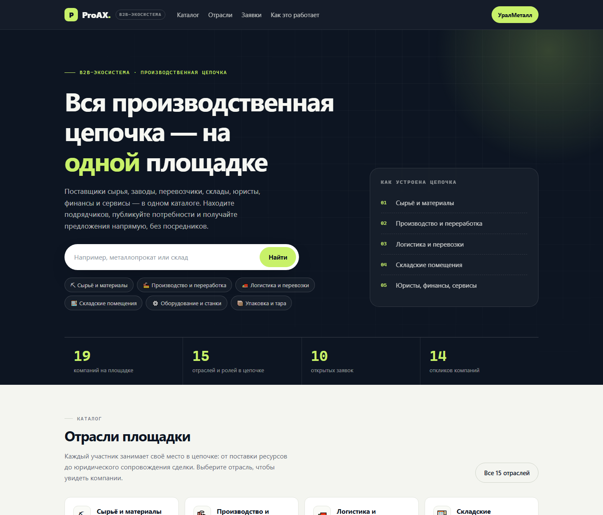
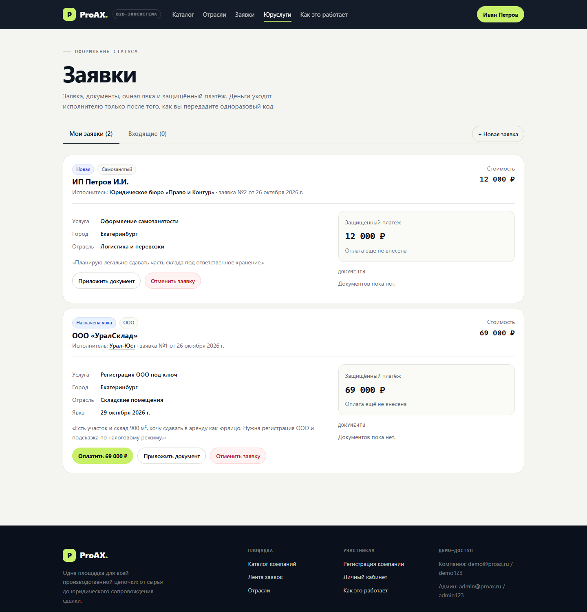
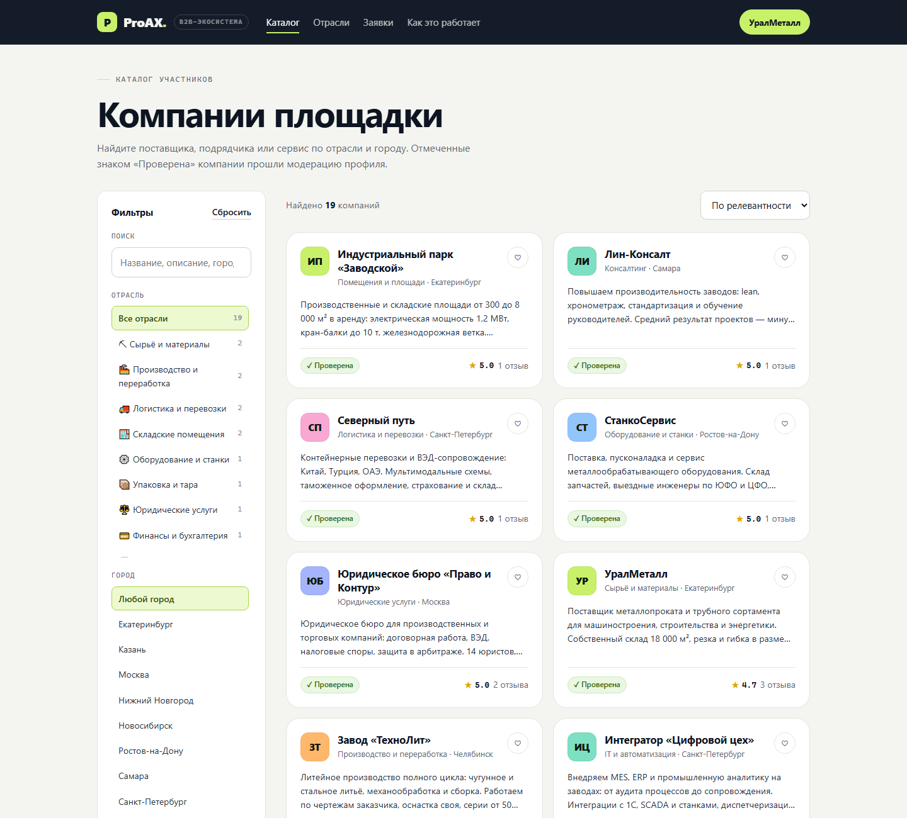
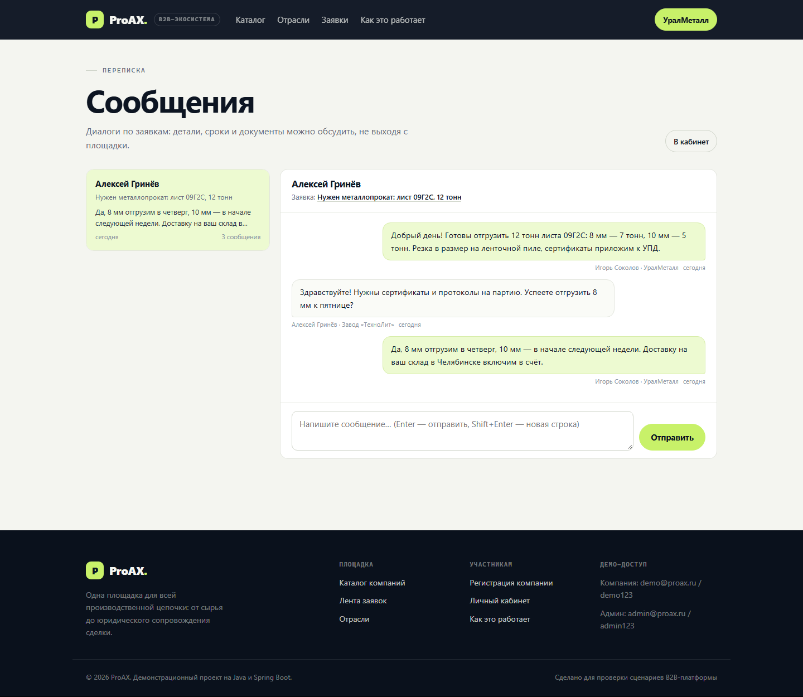
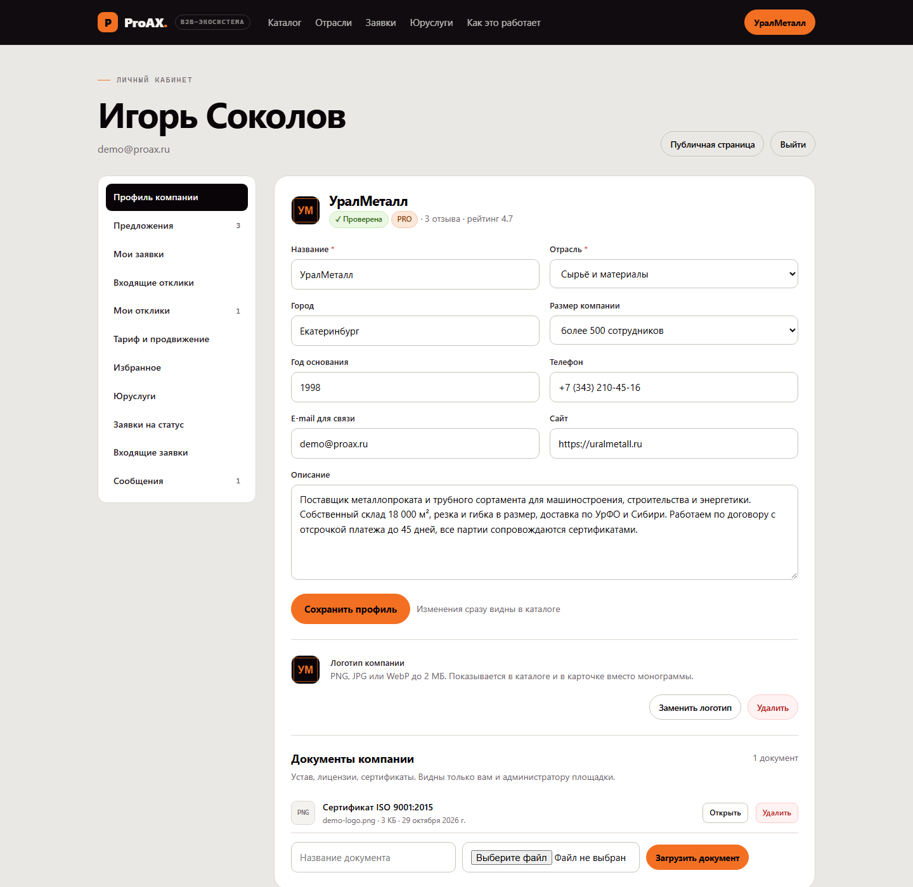

Каталог компаний
15 отраслей-ролей в цепочке, поиск по названию и городу, фильтры, сортировка, пагинация, рейтинг и отзывы.
Поставщики сырья, заводы, перевозчики, склады, оборудование, упаковка, юристы, финансы и сервисы — в одном каталоге. Компании публикуют потребности, получают отклики и договариваются напрямую, без посредников.

Шесть связанных сценариев: от регистрации компании до оплаты тарифа и внутренней переписки по заявке. Всё на реальных данных в базе, с ролями и проверкой прав.
15 отраслей-ролей в цепочке, поиск по названию и городу, фильтры, сортировка, пагинация, рейтинг и отзывы.
Потребность с бюджетом и сроком, отклики с ценой, принятие предложения и статусы «открыта / в работе / закрыта».
Диалог открывается откликом и привязан к паре «заявка + компания». Сообщения видят только две стороны.
Базовый, PRO и Premium: приоритет в каталоге, бейдж в карточке, история платежей и автоматическое снятие по сроку.
Загрузка логотипа вместо монограммы, приватные документы компании, раздача файлов через resource handler.
Профиль, предложения, заявки, отклики, избранное; модерация компаний и статистика площадки для администратора.
Владелец актива приходит без компании: выбирает юрфирму рядом, подаёт заявку, согласует очную явку и платит через эскроу. Деньги уходят исполнителю только после того, как заказчик передаст одноразовый код.

Собственная дизайн-система: светлая «бумажная» база, графитовые панели, лаймовая подсветка действий и моноширинные технические подписи. Адаптив до 390 px.



Классические слои Spring: домен → репозитории → сервисы → REST-контроллеры → SPA. Без Spring Security и Thymeleaf — сборка идёт из локального кэша Maven.
ADMIN, PERSON, COMPANYНужны JDK 21 и Maven. База H2 создаётся сама, демо-данные загружаются при первом запуске.
git clone https://github.com/Bell-igor/proAX.git
cd proAX
.\run.cmdПриложение откроется на http://127.0.0.1:8080
mvn clean package
java -jar target/proax.jar| Роль | Логин | Пароль |
|---|---|---|
| Частное лицо (2 заявки на статус) | person@proax.ru | person123 |
| Компания «УралМеталл» (PRO) | demo@proax.ru | demo123 |
| Юрфирма «Право и Контур» | e.radova@example.ru | demo123 |
| Администратор | admin@proax.ru | admin123 |
В демо: 22 компании, 15 отраслей, 38 предложений, 12 заявок, 3 диалога с перепиской, 4 юрфирмы и 12 юруслуг, 2 заявки на оформление статуса.